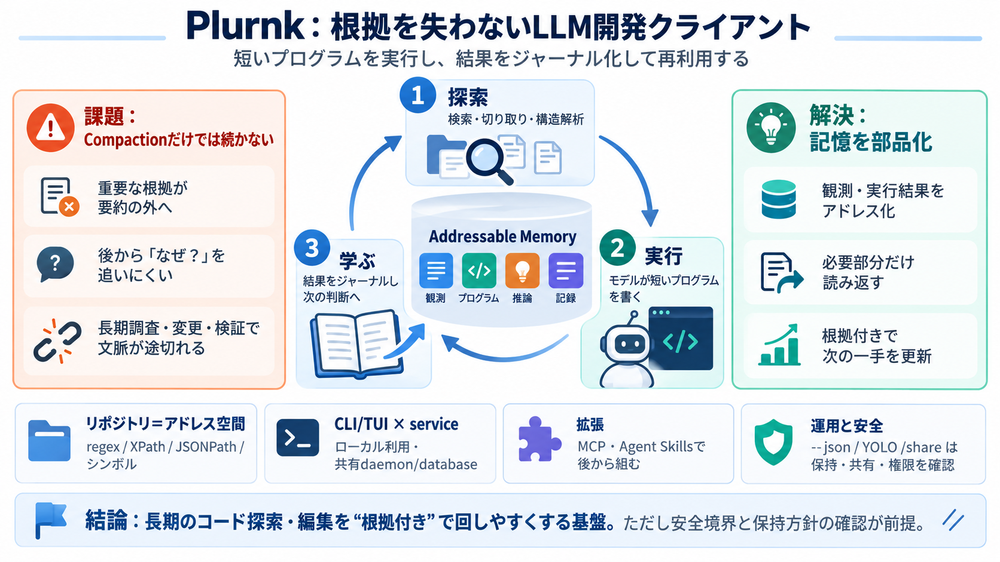

The Complete AI Tech Stack in 2026 (Agents, MCP, A2A Explained)
[4:10] restart. The memory service brings its own vector database QR. So it stays completely self-contained. You could a…

[4:10] restart. The memory service brings its own vector database QR. So it stays completely self-contained. You could a…
Perpetual Context. Like a "perpetual stew" for your tokens, Plurnk discards compaction entirely in favor of ongoing, mod…
For my clients, the practical consequence is simple: MCP is now the default answer to “how should our AI systems talk to…
The core reason for these changes is that AG-UI must be able to intercept messages produced by the A2A-based multi-agent…
Implementation implication: local developer integrations still commonly use stdio because the client can launch the serv…